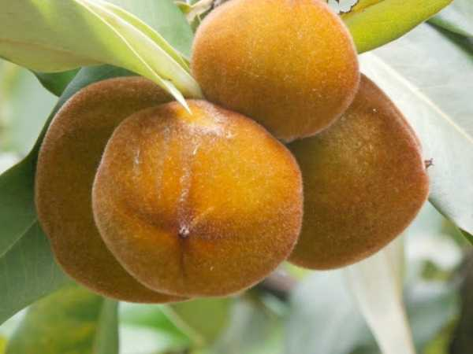

Diospyros blancoi
Common Names: Velvet Apple, Mabolo, Butter Fruit, Velvet Persimmon
Local Name: Mabolo (Filipino), Velvet Apple (English)
Family: Ebenaceae
Origin: Philippines; naturalized across Southeast Asia
Plant Type: Perennial evergreen tree; dioecious (separate male and female trees)
Variety: Mabolo — round fruit with distinctive velvety reddish-brown skin and creamy flesh
Average Lifespan: 50–100+ years
| Growth Habit | Large, erect tree with dense, rounded to pyramidal canopy; slow-growing |
| Plant Size | 10–20 meters tall; canopy spread 8–12 meters |
| Leaves | Alternate, oblong-elliptic, 12–30 cm long; dark glossy green above, silvery-hairy beneath |
| Flowers | Small, tubular, 1–2 cm; male flowers in 3–7 flowered cymes; female flowers solitary |
| Flower Characteristics | Dioecious — separate male and female trees required; creamy-white, fragrant flowers |
| Fruit | Round, 6–10 cm diameter; covered in fine velvety brown-red hairs; creamy, cheese-like flesh |
| Fruit Color | Reddish-brown velvety skin; cream to pale pink flesh inside |
| Seed Characteristics | 4–8 flat, brown seeds (2–3 cm long); embedded in flesh |
| Root System | Deep taproot with moderate lateral spread; strong anchoring system |
| Climate | Tropical lowland; thrives in hot, humid conditions |
| Temperature Range | 22–35°C ideal; frost-sensitive; does not tolerate temperatures below 8°C |
| Rainfall Requirement | 1500–3000 mm annually; tolerates seasonal dry periods |
| Soil Type | Deep, fertile, well-drained loamy soil; tolerates sandy and clay soils |
| Soil pH Preference | 5.5–7.0 |
| Sun Requirement | Full sun (6+ hours daily); tolerates partial shade when young |
| Spacing | 10–12 meters between trees; plant male and female trees nearby |
| Irrigation Method | Basin irrigation; supplemental watering during dry season |
| Water Requirement | Moderate; drought-tolerant once established |
| Can it Grow in Pots? | Young trees can be grown in large pots; slow growth makes it manageable initially |
| Fertilizer Schedule | 2–3 times per year; balanced NPK with organic supplements |
| Recommended Organic Fertilizers | FYM (20–40 kg/tree/year), compost, bone meal, wood ash |
| Pesticide Frequency | Minimal; naturally pest-resistant due to dense wood and hairy fruit |
| Recommended Organic Pesticides | Neem oil for occasional scale insects; fruit fly traps during fruiting |
| Mulching Practice | Organic mulch around base; leaf litter recycling |
| Training System | Central leader; minimal training needed; naturally forms good structure |
| Pruning Time | After fruiting; light maintenance pruning |
| How to Prune | Remove dead and crossing branches; manage height for easier harvest |
| Common Pests | Fruit fly, scale insects, leaf-eating caterpillars (rare) |
| Common Diseases | Leaf spot, root rot (in waterlogged conditions); generally disease-resistant |
| Disease Prevention & Remedies | Good drainage, avoid waterlogging, remove fallen fruit to prevent fungal issues |
| Flowering Months | March–May |
| Fruiting Season | August–November |
| Days to Harvest | 150–180 days from flowering |
| Harvest Indicators | Skin turns reddish-brown, velvety texture softens, strong cheese-like aroma develops |
| Average Yield per Plant | 100–300 fruits per tree (mature female); begins bearing at 6–8 years from seed |
| Pollination Type | Cross-pollination required; dioecious — needs male tree nearby |
| Pollination Notes | Wind and insect pollination; plant 1 male for every 8–10 female trees |
| Pollination Details | Dioecious; male and female flowers on separate trees; wind and insect pollination |
| Propagation by Seeds | Seeds germinate in 3–6 weeks; sex cannot be determined until flowering (5–8 years) |
| Propagation by Cuttings | Difficult; air layering possible but slow |
| Propagation by Grafting | Approach grafting or inarching on Diospyros rootstock; allows sex selection |
| Water Usage | Low to moderate once established; drought-tolerant |
| Soil Conservation Practices | Deep root system stabilizes soil; dense canopy reduces erosion |
| Organic Practices Used | Minimal inputs needed; naturally low-maintenance tree |
| Companion Plants | Coconut, banana, cacao (agroforestry systems) |
| Biodiversity Benefits | Dense ebony-family wood provides habitat; fruit feeds birds and bats |
| Commercial Production Regions | Philippines, Malaysia, Indonesia, India (limited), Pacific Islands |
| Market Uses | Fresh fruit (peeled), ornamental tree, timber (ebony family) |
| Processing Uses | Eaten fresh after peeling; used in desserts; wood valued for furniture |
| Market Value (Approx.) | ₹60–200 per kg; niche market fruit; timber highly valued |
| Symbolism | National fruit tree candidate in the Philippines; symbol of tropical abundance |
| Traditional Uses | Bark used in traditional Filipino medicine; wood for fine furniture; fruit in local cuisine |
| Calories | 55 kcal per 100g |
| Dietary Fiber | 2.4 g per 100g |
| Vitamin C | 12 mg per 100g |
| Vitamin A | 35 IU per 100g |
| Iron | 0.6 mg per 100g |
| Potassium | 186 mg per 100g |
| Antioxidants | Tannins, phenolic compounds, flavonoids |
| Other Key Nutrients | Calcium, phosphorus, protein (1.5g per 100g) |
| Anxiety & Sleep | Not a primary medicinal use |
| Immune Support | Moderate vitamin C and antioxidant content supports immunity |
| Anti-inflammatory Properties | Bark extract used traditionally for skin inflammation and wounds |
| Heart Health | Potassium and fiber content support cardiovascular health |
| Digestive Health | Bark decoction used traditionally for diarrhea and dysentery |
Disclaimer: Information provided is for educational purposes only and not a substitute for medical advice.
Add your field observations here.